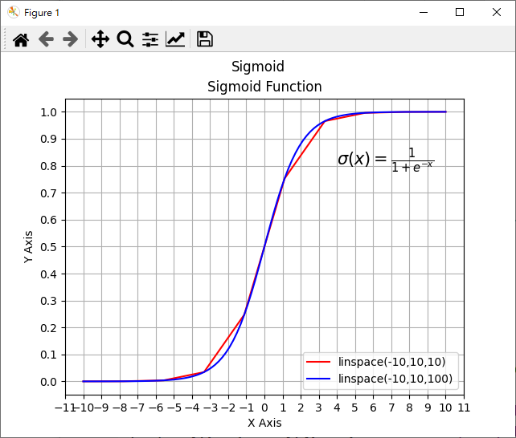
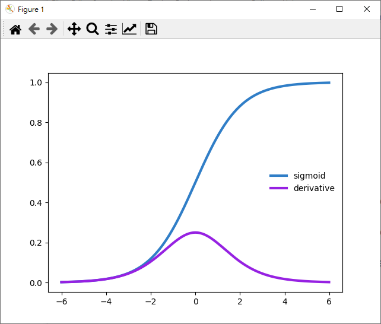

設計分析 <<
Previous Next >> 設計最佳化
Sigmoid
A sigmoid function is a mathematical function having a characteristic "S"-shaped curve or sigmoid curve. A common example of a sigmoid function is the logistic function defined by the formula:
Logistic Function(邏輯函式):
${ \large S(x) = \LARGE \frac{\mathrm{1}} {\mathrm{1} + e^{-x}}} $
${\large \begin{align} \dfrac{d}{dx} S(x) &= \dfrac{d}{dx} \left[ \dfrac{1}{1 + e^{-x}} \right] \\ &= \dfrac{d}{dx} \left( 1 + \mathrm{e}^{-x} \right)^{-1} \\ &= -(1 + e^{-x})^{-2}(-e^{-x}) \\ &= \dfrac{e^{-x}}{\left(1 + e^{-x}\right)^2} \\ &= \dfrac{1}{1 + e^{-x}\ } \cdot \dfrac{e^{-x}}{1 + e^{-x}} \\ &= \dfrac{1}{1 + e^{-x}\ } \cdot \dfrac{(1 + e^{-x}) - 1}{1 + e^{-x}} \\ &= \dfrac{1}{1 + e^{-x}\ } \cdot \left( \dfrac{1 + e^{-x}}{1 + e^{-x}} - \dfrac{1}{1 + e^{-x}} \right) \\ &= \dfrac{1}{1 + e^{-x}\ } \cdot \left( 1 - \dfrac{1}{1 + e^{-x}} \right) \\ &= S(x) \cdot (1 - S(x)) \end{align}}$
另外一種對 Logistic function 微分的推導法:
因為 ${\Large f(x)=\dfrac{1}{S(x)} = 1+e^{-x} }$
先對左邊的表示式微分可以得到:
${\Large f'(x) = \frac{d}{dx} \biggl( \frac{1}{S(x)} \biggr) = -\frac{S'(x)}{S(x)^2} }$
接著再對右邊的表示式微分可以得到:
${\Large f'(x) = \frac{d}{dx} \bigl( 1+e^{-x} \bigr) = -e^{-x} = 1-f(x) = 1 - \frac{1}{S(x)} = \frac{S(x)-1}{S(x)} }$
最後再將兩個式子合併整理一下, 就可以得到:
${\large S'(x) = \dfrac{d}{dx} S(x) = S(x) \cdot (1 - S(x))}$
假如使用 sympy 以符號式運算求 Logistic function 的微分式:
import sympy
x = sympy.Symbol('x')
def f(x):
return 1/(1+sympy.exp(-x))
def d(x):
return sympy.diff(f(x), x)
print(d(x))
# d(x) = exp(-x)/(1 + exp(-x))**2
已知從這裡可以利用 Python 加上 Matplotlib 畫出 Logistic function, 程式如下:
#import section
from matplotlib import pylab
import pylab as plt
import numpy as np
#sigmoid = lambda x: 1 / (1 + np.exp(-x))
def sigmoid(x):
return (1 / (1 + np.exp(-x)))
# generate an Array with value ???
# linespace generate an array from start and stop value
# with requested number of elements. Example 10 elements or 100 elements.
#
x = plt.linspace(-10,10,10)
y = plt.linspace(-10,10,100)
# prepare the plot, associate the color r(ed) or b(lue) and the label
plt.plot(x, sigmoid(x), 'r', label='linspace(-10,10,10)')
plt.plot(y, sigmoid(y), 'b', label='linspace(-10,10,100)')
# Draw the grid line in background.
plt.grid()
# Title & Subtitle
plt.title('Sigmoid Function')
plt.suptitle('Sigmoid')
# place the legen boc in bottom right of the graph
plt.legend(loc='lower right')
# write the Sigmoid formula
plt.text(4, 0.8, r'$\sigma(x)=\frac{1}{1+e^{-x}}$', fontsize=15)
#resize the X and Y axes
plt.gca().xaxis.set_major_locator(plt.MultipleLocator(1))
plt.gca().yaxis.set_major_locator(plt.MultipleLocator(0.1))
# plt.plot(x)
plt.xlabel('X Axis')
plt.ylabel('Y Axis')
# create the graph
plt.show()

利用 matplotlib 畫出上述手動推導與 Sympy 推導的 Logistic 函式與微分式圖:
import matplotlib.pyplot as plt
import numpy as np
def sigmoid(x):
s=1/(1+np.exp(-x))
#ds=s*(1-s)
ds = np.exp(-x)/(1 + np.exp(-x))**2
return s,ds
x=np.arange(-6,6,0.01)
plt.plot(x,sigmoid(x)[0], color="#307EC7", linewidth=3, label="sigmoid")
plt.plot(x,sigmoid(x)[1], color="#9621E2", linewidth=3, label="derivative")
plt.legend(loc="center right", frameon=False)
plt.show()

以下可以直接利用 Javascript 或 Brython 以 Html5 Canvas 直接在網頁中繪出 Logistic 函式圖?
參考資料
http://matt.might.net/articles/rendering-mathematical-functions-in-javascript-with-canvas-html/
https://eloquentjavascript.net/17_canvas.html
https://www.datasciencearth.com/en/symbolic-mathematics-operations-with-sympy/
設計分析 <<
Previous Next >> 設計最佳化